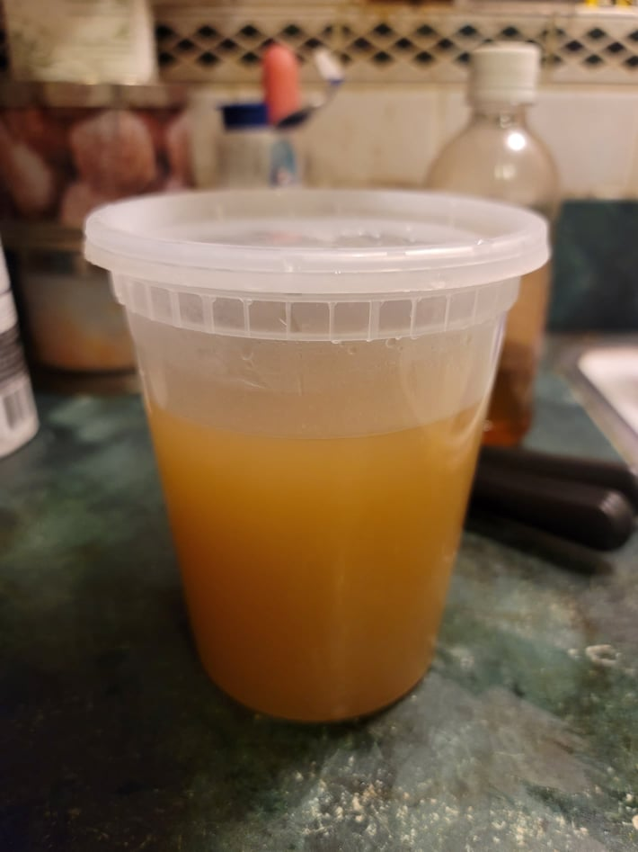

Rabbit Stock

Ingredients:
- 1-2 Rabbit carcass
- 12 cups Water
- 1 Onion or 3-4 Wild onions, halved, root-end cut off, skin kept on
- 1 sprig Cedar or 1 tbsp Dried cedar
- 5-6 Juniper berries
- 3-4 sprigs Sage
- Optional: Any other vegetables
- 3-4 sprigs Mint
- Optional: Salt, to taste
Instructions:
- Place the rabbit and water into a large pot. Bring the water to a boil and then reduce to a simmer. Let simmer for 30 minutes while removing and impurities that float to the surface.
- Add in the onion, cedar, juniper berries, and sage. Add any other optional vegetables if desired. Let simmer for another 2 1/2 hours.
- Add in the mint. Let cook for another 30-45 minutes.
- Add salt to taste if desired. Let cool and then strain into containers.